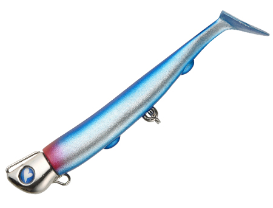
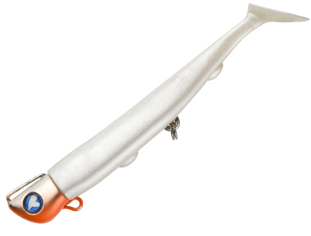
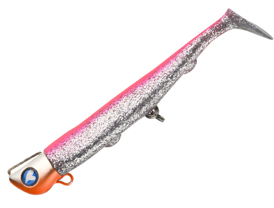
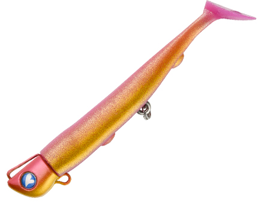

ジョルティ
（JOLTY）
JOLTY(ジョルティ)はBlueBlueのシンキングジグヘッドワームです。
ワームルアーの弱点【飛距離】を克服した食わせ力満載のジグヘッドワーム。

スペック
- メーカー
- BlueBlue
- 長さ
- 4 インチ
- 重さ
- 15/22/30 g
- フック
- #5×2
- レンジ
- オールレンジ
- タイプ
- ジグヘッドワーム
- 沈下タイプ
- シンキング
- アクション
- シャッドテール
- ターゲット
- シーバス
- 価格
- 1,628円(税込)〜
- 発売日
- 2018-09-04
▼今すぐチェック

ジョルティの特徴
ジグヘッドワームの常識を変えた「かっ飛び」×「強波動」の究極系
-
ジグヘッドワームクラス最高峰の飛距離
ジグヘッド部の重心を徹底的に研究し、風に負けず安定した飛行姿勢を実現する重心点を追求。空気抵抗を極限まで削ぎ落とした専用ワームとの組み合わせで、同クラスのジグヘッドワームの中でもトップクラスの飛距離を叩き出す。サーフの遠浅エリアや広大な港湾でのサーチに最適。
-
ド派手なハイピッチローリング＆尻振りアクション
リトリーブするとボディ全体が小刻みにローリングしながら尻尾を振る強波動アクションを発生。ワームの硬度設定が絶妙でシャッド部分が暴れすぎず、ナチュラルかつ強いアピールを両立。ワームが比較的硬く長持ちしやすいため、コスパ面でも優れている。
-
トレブルフック2個搭載でフッキング率が抜群
ジグヘッドに加えてボディ後方にトレブルフック（#5）を追加搭載した設計により、ショートバイトも確実にフッキングに持ち込める。ジグヘッドワームの弱点であるフッキング率の低さを解消した画期的な構造で、バイトを逃しにくい。
ジョルティの使い方
基本はタダ巻き。キャスト後にカウントダウンで狙いのレンジまで沈め、一定速度でリトリーブするだけでハイピッチローリングが自動的に発生する。リトリーブ速度を変えることでレンジが変化するため、表層からボトム付近まで1本で探れる。飛距離と手返しを重視するなら22g、スローに引いてアクションで食わせるなら軽量の15gへの変更も有効。
ジョルティの得意な状況
遠浅サーフでのヒラメ・マゴチ狙いで特に威力を発揮する。飛距離が正義のサーフフィッシングにおいて、ワームの食わせ能力とジグヘッドの飛距離を両立している点が他のルアーとの差別化ポイント。港湾・磯でのシーバスゲームにも対応し、プラグで反応がないタフなコンディションの「後出しルアー」として投入するのも効果的。
ワンポイント
サーフではフルキャスト後にボトムを取り、リフト&フォールを織り交ぜながらタダ巻きで探るのが基本。シーバスゲームではプラグローテーションの最後に投入する「フォローベイト」としての使い方が特に有効で、プラグを通した後でもジョルティ22なら口を使わせられるケースが多い。ジグヘッドカラーとワームカラーの組み合わせで見た目の印象が大きく変わるため、複数カラーを持参して状況に合わせよう。
ジョルティシリーズの使い分け
| モデル | 全長／自重 | 得意な場面 |
|---|---|---|
| ジョルティmini | 3インチ | 小型ベイトやライトタックルで使いたいときに |
| ジョルティ | 4インチ／15・22・30g | 重さでレンジと飛距離を選べる基準モデル（本記事のモデル） |
ジョルティは重さ違いでレンジと飛距離を選べます。浅い場所や流れの緩い場所は軽め、遠浅サーフや深場・流れの強い場所は重めを選びましょう。ベイトが小さいときはジョルティminiがオススメです。
オススメカラー

#01 ブルーブルー/クロームブランドを代表するブルー系カラー。澄み潮・晴天デイゲームでの定番。

#07 パールホワイト/オレンジベリーベリーのオレンジが強いアピールを発揮。ナイトゲームやローライトでの実績が高い万能カラー。

#11 ピンクシルバー/オレンジベリーピンク系のアピールカラー。濁りや光量の少ない状況でシルエットを際立たせる。

#08 ピンクジョーカー/アカキンピンクの背中とアカキンのボディでしっかり目立つアピールカラー。フラットフィッシュや青物を狙うサーフのデイゲームに。
画像出典:ブルーブルー公式HP
ジョルティに似ているルアー
-
 ジョルティmini
ブルーブルー
詳細はこちら＞
ジョルティmini
ブルーブルー
詳細はこちら＞
同じジョルティシリーズの3インチモデル。小型ベイトを食っているときや、ライトタックルで使いたいときに。
-
 VJ-16
コアマン
詳細はこちら＞
VJ-16
コアマン
詳細はこちら＞
コアマンのバイブレーションジグヘッド。同じジグヘッド＋ワームで、ボディ全体のバイブレーションで誘いたいときに。
-
 ローリングジグヘッド RJ-10
コアマン
詳細はこちら＞
ローリングジグヘッド RJ-10
コアマン
詳細はこちら＞
コアマンのローリングジグヘッド。ローリングアクションで、ジョルティと同じ巻きの釣りに使える。